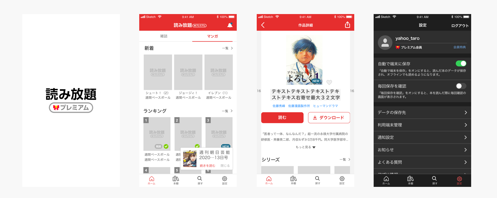
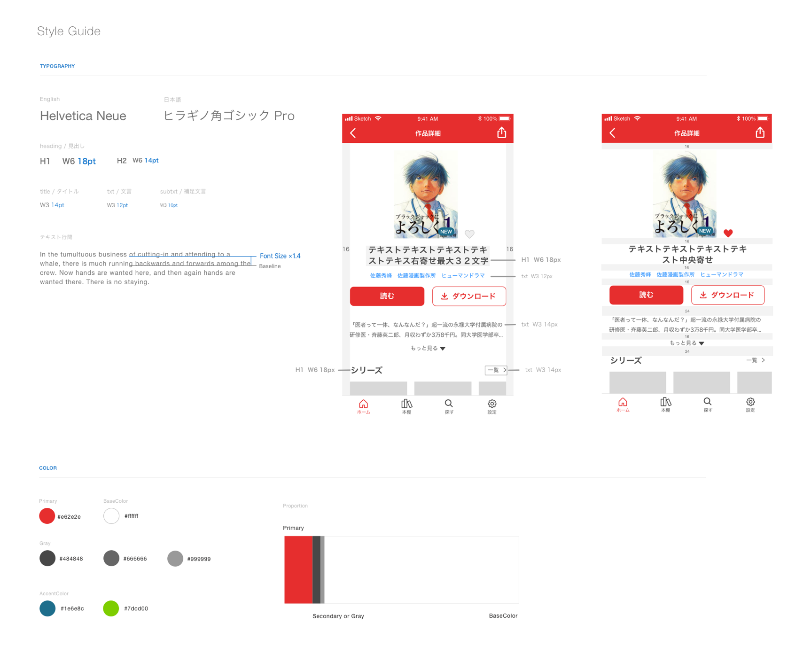

読み放題プレミアムアプリ UI作成 / 施策検討
2019

- 概要
- 2019年2月にリリースされた提供する雑誌とマンガが読み放題で楽しめる月額課金ユーザー向けサービスのスマートフォン向けアプリのUI/UX改善を担当。改善施策を検討し、DAU/MAU増加を目指した。
- 担当：UI作成、施策検討、テスト
- 使用ツール：sketch / abstract / zeplin / Adobe XD
- 期間：2019年10月-
- メンバー：7人（日本人＋ベトナム開発拠点メンバー）
- URL：https://premium.yahoo.co.jp/yomihodai/
- 作業内容
- 仕様策定とUI作成
- 現状の課題を元に、改善案を提案し、リリース後にレビューやDAU、MAUをみて評価。デザインはsketchを用い、atomicデザインの概念を用いてコンポーネントごとにパーツを作成する。


その他仕様設計書例（PDF）
- スタイルガイド作成
- リリース時に策定できていなかった、デザインのトンマナを整える作業を実施。
